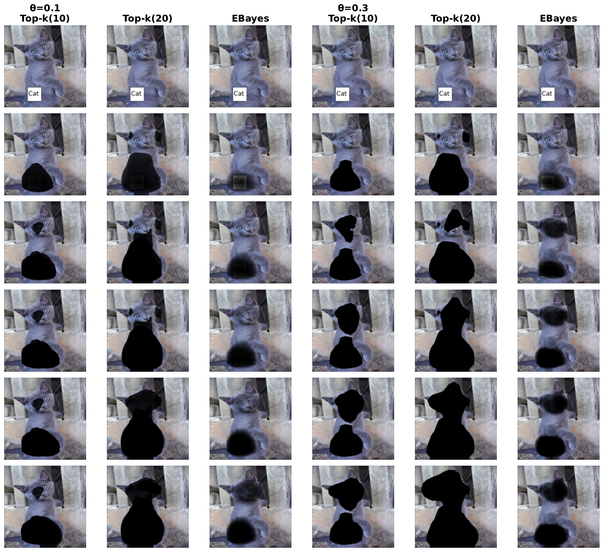
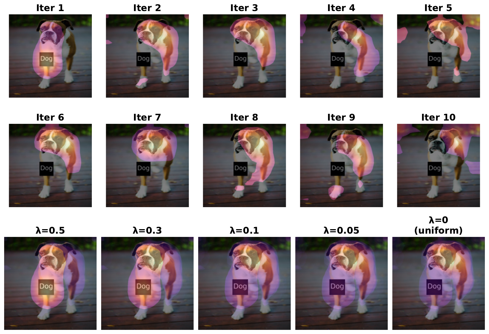

Performance Metrics
Pointing Game (Oxford)
89.24%
+30%p vs FullGrad
Pointing Game (COCO)
75.98%
+31%p vs FullGrad
Average Precision
0.6529
+32% vs FullGrad
IoU (Oxford)
0.2366
Best among all
Summary Comparison
| Dataset |
Method |
AP |
Pointing Game |
IoU |
| Oxford-IIIT Pet |
CasCAM |
0.6529 |
89.24% |
0.2366 |
| Oxford-IIIT Pet |
FullGrad |
0.4940 |
59.61% |
0.2350 |
| MS-COCO |
CasCAM |
0.5417 |
75.98% |
0.2050 |
| MS-COCO |
FullGrad |
0.4325 |
44.91% |
0.2416 |
MS-COCO Dataset (1,728 images)
Configuration: num_iter=15, θ=0.1, top_k=10, λ=0.0
| Method |
AP |
IoU |
Pointing Game |
Top-15% |
| CasCAM |
0.5417 |
0.2050 |
75.98% |
0.4004 |
| FullGrad |
0.4325 |
0.2416 |
44.91% |
0.3796 |
| ScoreCAM |
0.2840 |
0.1142 |
20.95% |
0.2261 |
| GradCAM |
0.2786 |
0.1124 |
20.72% |
0.2225 |
| CAM |
0.2782 |
0.1183 |
20.72% |
0.2225 |
Oxford-IIIT Pet Dataset
Configuration: num_iter=10, θ=0.3, top_k=10, λ=0.1
| Method |
AP |
IoU |
Pointing Game |
Top-15% |
| CasCAM |
0.6529 |
0.2366 |
89.24% |
0.6499 |
| FullGrad |
0.4940 |
0.2350 |
59.61% |
0.5142 |
| ScoreCAM |
0.5243 |
0.1524 |
42.22% |
0.5169 |
| GradCAM |
0.5191 |
0.1325 |
42.29% |
0.5001 |
| CAM |
0.5190 |
0.1432 |
42.29% |
0.5001 |
Oxford-IIIT Pet: All Experiments
Best Pointing Game
89.24%
iter=10, θ=0.3, k=10
Best IoU
0.3049
iter=10, θ=0.3, k=20
Best AP
0.6529
iter=10, θ=0.3, k=10
Total Experiments
23
3 threshold methods
Baseline Methods (All Experiments Share Same Baselines)
| Method |
AP |
IoU |
Pointing Game |
Top-15% |
| CAM |
0.5190 |
0.1432 |
42.29% |
0.5001 |
| GradCAM |
0.5191 |
0.1325 |
42.29% |
0.5001 |
| HiResCAM |
0.5191 |
0.1325 |
42.29% |
0.5001 |
| GradCAM++ |
0.5207 |
0.1287 |
42.02% |
0.5054 |
| ScoreCAM |
0.5243 |
0.1524 |
42.22% |
0.5169 |
| AblationCAM |
0.5213 |
0.1314 |
41.81% |
0.5050 |
| XGradCAM |
0.5191 |
0.1325 |
42.29% |
0.5001 |
| FullGrad |
0.4940 |
0.2350 |
59.61% |
0.5142 |
| EigenGradCAM |
0.5007 |
0.0762 |
41.81% |
0.4913 |
| LayerCAM |
0.5225 |
0.1316 |
42.22% |
0.5100 |
CasCAM with Top-K Threshold (Best Method)
The top_k threshold method consistently outperforms other threshold methods across all metrics.
| num_iter |
θ |
top_k |
AP |
IoU |
Pointing Game |
Top-15% |
| 3 |
0.1 |
10 |
0.5032 |
0.0581 |
42.83% |
0.4823 |
| 3 |
0.1 |
20 |
0.5165 |
0.1735 |
44.38% |
0.5524 |
| 3 |
0.3 |
10 |
0.5447 |
0.1661 |
65.02% |
0.5756 |
| 3 |
0.3 |
20 |
0.5602 |
0.2312 |
55.68% |
0.5806 |
| 5 |
0.1 |
10 |
0.5517 |
0.1669 |
63.40% |
0.5913 |
| 5 |
0.1 |
20 |
0.5472 |
0.2236 |
48.17% |
0.5803 |
| 5 |
0.3 |
10 |
0.5820 |
0.2090 |
78.82% |
0.5926 |
| 5 |
0.3 |
20 |
0.6078 |
0.2755 |
71.85% |
0.6193 |
| 10 |
0.1 |
10 |
0.5926 |
0.2067 |
81.33% |
0.6095 |
| 10 |
0.1 |
20 |
0.5826 |
0.2608 |
61.43% |
0.6094 |
| 10 |
0.3 |
10 |
0.6529 |
0.2366 |
89.24% |
0.6499 |
| 10 |
0.3 |
20 |
0.6393 |
0.3049 |
78.48% |
0.6545 |
Key Finding: top_k=10 achieves best Pointing Game (89.24%), while top_k=20 achieves best IoU (0.3049). Choose based on your optimization target.
CasCAM with EBayesThresh
Empirical Bayes thresholding provides adaptive, data-driven threshold selection.
| num_iter |
θ |
AP |
IoU |
Pointing Game |
Top-15% |
| 3 |
0.1 |
0.4449 |
0.0497 |
41.27% |
0.3471 |
| 3 |
0.3 |
0.5163 |
0.0685 |
45.53% |
0.5459 |
| 5 |
0.3 |
0.5646 |
0.1089 |
59.61% |
0.6109 |
| 10 |
0.1 |
0.5505 |
0.0922 |
54.87% |
0.5964 |
| 10 |
0.3 |
0.5951 |
0.1260 |
69.01% |
0.6262 |
Key Finding: EBayesThresh underperforms compared to Top-K, but still outperforms baseline methods on Pointing Game.
CasCAM with No Threshold (Baseline CasCAM)
No explicit thresholding applied - uses raw CAM values.
| num_iter |
θ |
AP |
IoU |
Pointing Game |
Top-15% |
| 3 |
0.1 |
0.5312 |
0.1715 |
43.03% |
0.5419 |
| 3 |
0.3 |
0.5050 |
0.1409 |
42.42% |
0.5131 |
| 5 |
0.1 |
0.5266 |
0.1616 |
42.29% |
0.5415 |
| 5 |
0.3 |
0.5232 |
0.1976 |
42.22% |
0.5274 |
| 10 |
0.1 |
0.5417 |
0.2136 |
46.14% |
0.5756 |
| 10 |
0.3 |
0.4973 |
0.2179 |
40.66% |
0.4966 |
Key Finding: Without thresholding, CasCAM fails to outperform baseline methods. The threshold method is essential for CasCAM's effectiveness.
Summary: Best Configurations by Metric
| Optimization Target |
Best Configuration |
Value |
vs. Best Baseline |
| Pointing Game |
iter=10, θ=0.3, top_k=10 |
89.24% |
+29.63%p vs FullGrad (59.61%) |
| IoU |
iter=10, θ=0.3, top_k=20 |
0.3049 |
+29.7% vs FullGrad (0.2350) |
| AP |
iter=10, θ=0.3, top_k=10 |
0.6529 |
+24.5% vs ScoreCAM (0.5243) |
| Top-15% Energy |
iter=10, θ=0.3, top_k=20 |
0.6545 |
+26.6% vs ScoreCAM (0.5169) |
Parameter Effects
We analyze the effect of key hyperparameters on CasCAM performance. The main parameters are: (1) number of iterations (num_iter), (2) removal strength (θ), (3) threshold method, and (4) exponential decay weight (λ).
Key Parameters
| Parameter |
Description |
Optimal Range |
num_iter |
Number of cascading iterations |
10-15 |
θ (theta) |
Removal strength - controls how aggressively artifact regions are suppressed |
0.1-0.3 |
top_k |
Top-k% threshold - determines which CAM regions are considered for removal |
10-20 |
λ (lambda) |
Exponential decay weight for combining CAMs: wk = e-λk |
0.0-0.1 |
Threshold Method Comparison
The threshold method (TH) determines which CAM regions are considered for artifact removal at each iteration.
| Scheme |
Suppression Range |
Locality |
Post-processing |
| TH = ∅ (None) |
Entire CAM |
Low |
None |
| TH = Top-k |
Top k% only |
Very high |
Required (normalization) |
| TH = EBayesThresh |
Soft-thresholding |
Medium |
Not required |
Key Finding: Top-k thresholding produces the best results by focusing on the most activated regions. The threshold method is essential - without it, CasCAM fails to outperform baseline methods.
Effect of Number of Iterations
| num_iter |
AP |
IoU |
Pointing Game |
Top-15% |
| 3 |
0.5447 |
0.1661 |
65.02% |
0.5756 |
| 5 |
0.5820 |
0.2090 |
78.82% |
0.5926 |
| 10 |
0.6529 |
0.2366 |
89.24% |
0.6499 |
Key Finding: Performance consistently improves with more iterations. Early iterations (1-3) remove obvious background artifacts, while later iterations (7-10) fine-tune attention to focus precisely on the object.
Effect of θ (Removal Strength)
The parameter θ controls the strength of artifact removal. Higher θ produces more aggressive removal, accelerating convergence but potentially removing object-relevant regions.
| θ |
Pointing Game (iter=10) |
IoU (iter=10) |
Behavior |
| 0.1 |
81.33% |
0.2067 |
Gentle removal, slower convergence |
| 0.3 |
89.24% |
0.2366 |
Aggressive removal, faster convergence |
Key Finding: θ=0.3 achieves optimal balance between removal speed and precision for Oxford dataset.
Visualization: Removed Images Across Iterations
The figure below shows how different hyperparameter configurations affect the artifact removal process. The removed regions (appearing as attenuated areas) indicate where the model has learned to suppress artifacts.

Figure 1: Visualization of removed images across iterations for Russian Blue cat.
Columns represent different threshold methods (Top-k(10), Top-k(20), EBayes) under two θ values (0.1 and 0.3).
Rows show the progression from original image through selected iterations (1, 3, 5, 7, 9).
Effect of λ (Exponential Decay Weight)
The parameter λ controls the exponential decay weighting when combining CAMs across iterations, with weight wk = e-λk for iteration k.
| λ |
Weight Distribution |
Visual Effect |
| 0.0 |
Uniform (all iterations equal) |
Broader attention, captures more of the object region |
| 0.1 |
Slight early emphasis |
Balanced focus |
| 0.3 |
Moderate early emphasis |
More focused attention |
| 0.5 |
Strong early emphasis |
Sharper, highly focused attention maps |
Visualization: Effect of λ on CAM Combination

Figure 2: Effect of λ on CasCAM combination (Boxer dog, θ=0.3, top_k=20, iter=10).
Rows 1-2: Individual CAMs at each iteration (iter 1-10).
Row 3: Combined CasCAM with different λ values (0.5, 0.3, 0.1, 0.05, 0).
Key Finding: Higher λ values emphasize earlier iterations, resulting in sharper, more focused attention maps. λ=0 (uniform weighting) produces broader attention that may capture more of the object region.
Dataset-Specific Optimal Settings
| Dataset |
Best num_iter |
Best θ |
Best λ |
Best top_k |
| Oxford-IIIT Pet |
10 |
0.3 |
0.1 |
10 (Pointing Game) / 20 (IoU) |
| MS-COCO |
15 |
0.1 |
0.0 |
10 |
Key Finding: More complex datasets (COCO) benefit from more iterations and gentler removal strength. Oxford benefits from more aggressive settings due to cleaner single-object images.
Timing Analysis
Timing Breakdown (per experiment)
| Component |
Time |
| Training (per iteration) |
~2-5 min |
| CAM Generation (per image) |
~0.1-0.5 sec |
| Total (10 iterations, 500 images) |
~30-60 min |
Times vary based on hardware (GPU) and dataset size.
Method Comparison
| Method |
Requires Training |
CAM Generation |
Relative Speed |
| CasCAM |
Yes (iterative) |
Fast |
Slower |
| CAM |
No |
Fast |
Fast |
| GradCAM |
No |
Fast |
Fast |
| ScoreCAM |
No |
Slow (perturbation) |
Slower |
| FullGrad |
No |
Medium |
Medium |
Trade-off Analysis
| Aspect |
CasCAM |
Traditional CAMs |
| Setup Time |
Higher (training) |
None |
| Inference Speed |
Same |
Same |
| Localization Accuracy |
+30%p |
Baseline |
| AP Score |
+25% |
Baseline |
Conclusion: CasCAM's upfront training cost is offset by significantly improved localization performance, making it ideal for applications where interpretability accuracy is critical.